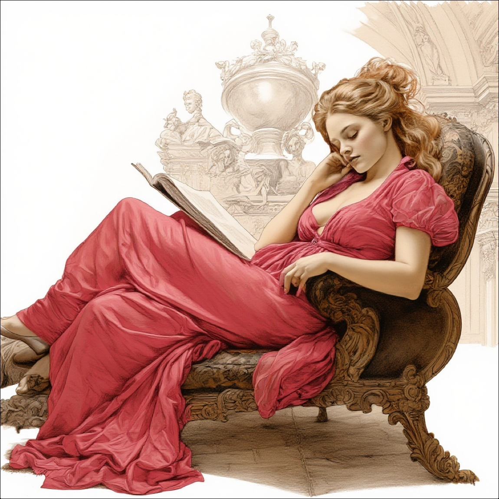
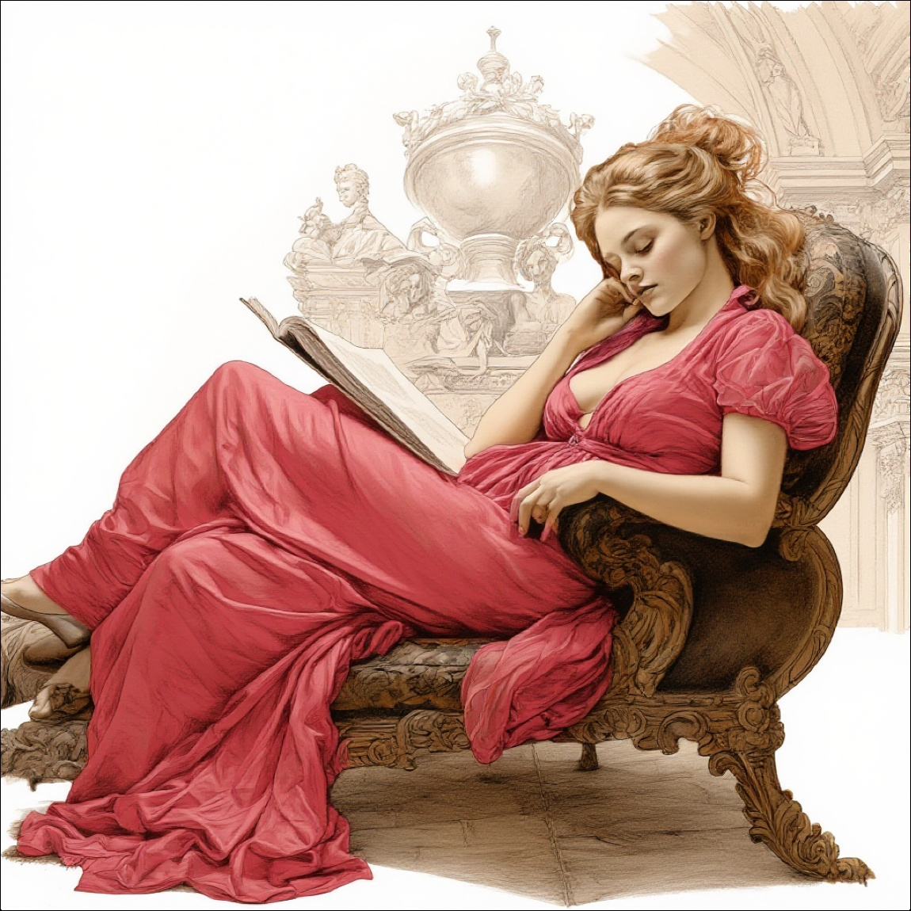

We report ACE++, an instruction-based diffusion framework that tackles various image generation and editing tasks. Inspired by the input format for the inpainting task proposed by FLUX.1-Fill-dev, we improve the Long-context Condition Unit (LCU) introduced in ACE and extend this input paradigm to any editing and generation tasks. To take full advantage of image generative priors, we develop a two-stage training scheme to minimize the efforts of finetuning powerful text-to-image diffusion models like FLUX.1-dev. In the first stage, we pre-train the model using task data with the 0-ref tasks from the text-to-image model. There are many models in the community based on the post-training of text-to-image foundational models that meet this training paradigm of the first stage. For example, FLUX.1-Fill-dev deals primarily with painting tasks and can be used as an initialization to accelerate the training process. In the second stage, we finetune the above model to support the general instructions using all tasks defined in ACE. To promote the widespread application of ACE++ in different scenarios, we provide a comprehensive set of models that cover both full finetuning and lightweight finetuning, while considering general applicability and applicability in vertical scenarios. The qualitative analysis showcases the superiority of ACE++ in terms of generating image quality and prompt following ability


 



@article{mao2025ace++,
title={ACE++: Instruction-Based Image Creation and Editing via Context-Aware Content Filling},
author={Mao, Chaojie and Zhang, Jingfeng and Pan, Yulin and Jiang, Zeyinzi and Han, Zhen and Liu, Yu and Zhou, Jingren},
journal={arXiv preprint arXiv:2501.02487},
year={2025}
}
@article{han2024ace,
title={ACE: All-round Creator and Editor Following Instructions via Diffusion Transformer},
author={Han, Zhen and Jiang, Zeyinzi and Pan, Yulin and Zhang, Jingfeng and Mao, Chaojie and Xie, Chenwei and Liu, Yu and Zhou, Jingren},
journal={arXiv preprint arXiv:2410.00086},
year={2024}
}